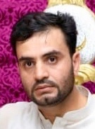

Amjad Iftikhar
 Web developer at Hack Your Future
Web developer at Hack Your Future
 +123456789
+123456789
 abc@hotmail.com
abc@hotmail.com
 HYF Copenhagen 2450
HYF Copenhagen 2450
Ojectives
To secure challenging and responsible position in IT industry where I can utilize my education and technical skills